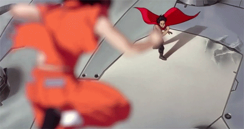
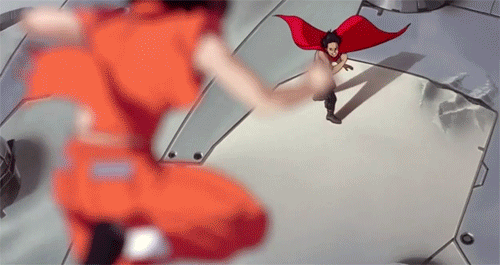

Anime
Anime significa animação, é uma forma abreviada da palavra "animação" em japonês. Nas outras línguas e culturas, o termo anime é utilizado para designar animação japonesa ou animação produzida num estilo que foi disseminado pela animação de origem japonesa.
Não é fácil definir o estilo, nem cabe aqui uma análise aprofundada do tema. Importa referir que o anime, enquanto estilo, surge nos anos 60 pela mão de Osamu Tezuka. A sua intenção inicial era sobretudo adaptar e simplificar as técnicas de animação da Disney para limitar o número de frames necessárias numa produção, reduzindo os custo de produção e permitindo produzir com prazos curtos e com animadores pouco experientes. Muitas destas opções e técnicas são hoje utilizadas como dispositivos artísticos, por opção e não por necessidade.
O anime é hoje associado a imagens cheias de cor, personagens entusiasmantes e temas fantásticos, e é uma metodologia de produção menos preocupada com a qualidade do movimento e mais preocupada com a qualidade da imagem e com a utilização da câmara (panning, zooming e ângulos, perspectivas). Geralmente, o anime é produzido como se a câmara realmente existisse, utilizando planos dinâmicos e complexos que seriam até difíceis de realizar no mundo real.
 Osamu Tezuka. Fotografia de William Maanders.
Osamu Tezuka. Fotografia de William Maanders.
Osamu Tezuka
Hayao Miyazaki
- Hayao Miyazaki @ Wikipedia >>
Studio Ghibli
- Studio Ghibli @ Wikipedia >>
Spirited Away
É comum a utilização de "Smear animation": movimento rápido e representado apenas por 3 frames: estado inicial, estado final e uma frame intermédia com blur.
As proporções anatómicas das personagens de anime tendem a ser realistas e a refletir o corpo humano. A altura da cabeça é a unidade base, pode variar mas é comum as personagens terem 7 a 8 "cabeças" de altura. Personagens deformadas tendem a ter corpo muito pequeno (quando comparado com a cabeça), é comum 2 a 4 cabeças de altura.
Geralmente, as personagens de anime apresentam olhos com dimensão exagerada. Os olhos grandes é uma carateŕística que vem desde os primórdios do anime (Osamu Tezuka) e permite a representação de todas as emoções humanas só através da animação dos olhos.
É comum a utilização de uma mistura de sombras claras, sombras escuras e cor para criar maior profundidade. Esta preocupação é garalmente mais visível na coloração das córneas.
No anime, é comum o cabelo apresentar cor e movimentos pouco naturais ou estilo visual único. É comum o movimento do cabelo ser bastante exagerado e a sua utilização para reforçar ou salientar emoções e ação das personagens.

Diversas personagens de anime não apresentam traços que permitam identificar nacionalidade ou origem étnica.
Utilização de diversos símbolos visuais: gotas de suor para representar nervosismo, corar para representar vergonha ou embraço, etc.
 

Utilização de técnicas e animação de câmara (como o panning) para sugerir movimento. Imagine o shake da câmara para sugerir ondas de choque de uma explosão.


As mesmas sequências ou elementos são reutilizados com frequência. O efeito animado da transformação de uma personagem, um walk-cycle ou a animação de uma expressão facial podem ser utilizados várias vezes.
As personagens são divididas em várias partes com diferentes graus de detalhe. É comum só animar partes da personagem: animação da boca ou de um braço e o resto é imagem estática.
Utilização inteligente e criativa dos ângulos da câmara e da edição vídeo.

Utilização de manga para expandir a narrativa ou como ponto de partida.
Utilização de animação do fundo para sugerir movimento.

Atualmente, a produção de animação está disseminada pelo mundo inteiro. Isto é válido para qualquer técnica ou estilo. É hoje comum a mesma produção estar distribuída por estúdios localizados em países (e até continentes) diferentes. Apesar da indústria do Anime continuar a estar sobretudo centrada no Japão, a influência do Anime ultrapassou já largamente o Japão (existe animação não japonesa influenciada pelo Anime) e existe produção de Anime fora do Japão (produções japonesas que são realizadas, pelo menos parcialmente, por estúdios localizados noutros países).
A indústria do Anime é constituída por mais de 400 empresas, de dimensão variável, sendo comum a colaboração entre elas, tanto através de co-produções como de subcontratações.
Existe Anime produzido para cinema, DVD e televisão. A qualidade e custo destas produções seguem, geralmente, a mesma ordem: maior qualidade e custos associados à produção de Anime para cinema e menor qualidade e menores custos associados à produção para televisão. No entanto, é sobretudo no mercado do DVD que o Anime se revela mais lucrativo e produtivo. Os formatos OVA (Original Video Animation) e OAD (Original Animation DVD - DVD publicado juntamente com manga original) são exemplos relevantes deste mercado.
A produção de Anime é bastante variada, incluindo diferentes públicos e génereos diversificados: kodomo (infantil), shōjo (raparigas), shounen (rapazes), hentai (pornográfico), fantasia, ficção-científica (que inclui subgrupo mecha), desporto, etc.
A indústria do Anime continua lucrativa e a crescer, apesar dos desafios colocados pela globalização da produção e novos mercados.
Em 2013, a indústria japonesa de animação produziu mais de 100.000 minutos de anime para televisão (e não inclui OVAs e cinema!) (1). Já existiram anos com mais minutos de produção mas o dado é particularmente impressionante se considerarmos que um ano de 365 dias tem 525.600 minutos. Por outro lado, o panorama atual inclui ainda o crescimento da concorrência de outras indústrias asiáticas de animação, o que tem obviamente um impacto direto no mercado para a animação da indústria japonesa: Em 2011, a indústria chinesa de animação (fortemente apoiada pelo estado) produziu 261.224 minutos de animação para televisão... (2)